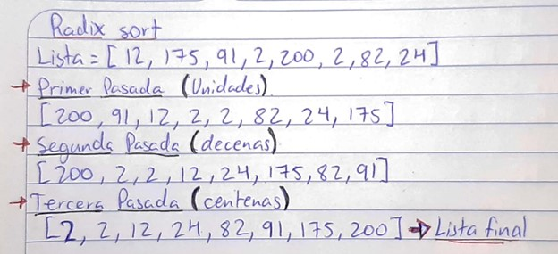
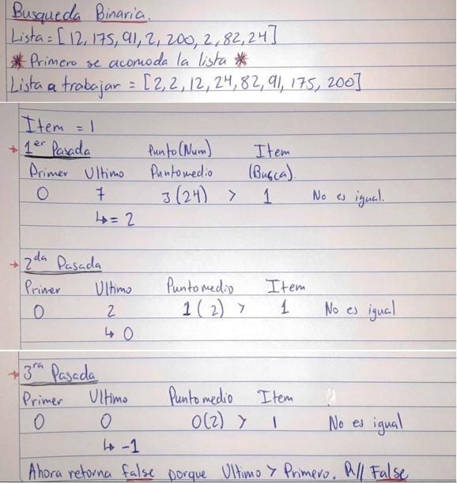
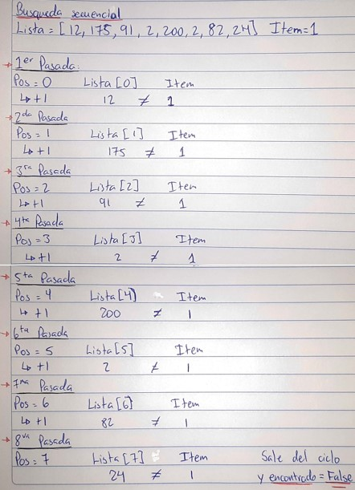

Ordenamientos
*Las imagenes se agrandan cuando el cursor se posa sobre ellas*
Burbuja
Año de creacion: No se sabe con certeza.
Autor: No se sabe con certeza.
Tiempo de ejecucion (Eficiencia): O(n^2)
Caracteristicas: Es ineficiente con muchos datos. Y este compara pares adyacentes de elementos y los intercambia en caso de estar ordenados incorrectamente. Es simple.

Selección
Año de creacion: No se sabe con certeza.
Autor: No se sabe con certeza.
Tiempo de ejecucion (Eficiencia): O(n^2)
Caracteristicas: Busca el elemento mas pequeño de la lista ordenada y lo acomoda en la posicion correcta. Es simple pero inficiente con muchos datos.
Inserción
Año de creacion: No se sabe con certeza.
Autor: No se sabe con certeza.
Tiempo de ejecucion (Eficiencia): O(n^2)
Caracteristicas: Construye una lista insertando los elementos en la posicion correcta en una lista ya ordenada de uno en uno. Es eficiente para listas casi ordenadas o pocos datos de lo contratio puede ser ineficiente.
Shell Sort
Año de creacion: Se propuso en el 1959.
Autor: Donald Shell
Tiempo de ejecucion (Eficiencia): En promedio: O(n log n) pero en el peor caso puede ser de O(n^2).
Caracteristicas: Es una mejora de Inserción, ya que mueve los elementos a su posicion final mas rapido. Divide la lista en grupos mas pequeños y usa la idea de insercion con esos pequeños grupos haciendo que sea eficiente.
Quicksort
Año de creacion: Se desarrolló en 1959.
Autor: Tony Hoare
Tiempo de ejecucion (Eficiencia): En promedio: O(n log n) pero en el peor caso puede ser de O(n^2).
Caracteristicas: Es eficiente y bastante utilizado. Este divide la lista en dos subconjuntos (un subconjunto con elementos menores que el Pivote y otro con mayores) y seleciona un "Pivote", luego repite el proceso hasta que ordena la lista.
Radix Sort
Año de creacion: Se desarrolló en la década de 1880.
Autor: Herman Hollerith
Tiempo de ejecucion (Eficiencia): Depende de 'n' numero de elementos y 'd' longitud de elementos. O(d*n)
Caracteristicas: Se basa en un ordenamiento de acuerdo a sus caracteres en una posicion o digitos. Realiza varias pasadas en las cuales para organizar comienza por el digito menos significativo (unidades) y se mueve al mas significativo (en el caso del ejemplo U.Millar).
Shake Sort
Año de creacion: No tiene un autor especifico, debido a que es una variante del Burbuja.
Autor: Se introdujo en la década de 1950.
Tiempo de ejecucion (Eficiencia): O(n^2)
Caracteristicas: Este va haciendo una pasada hacia adelante y otra hacia atras a lo largo de la lista. Intercambia elementos adyacentes si no estan ordenados. En algunos casos la eficiencia puede ser mejor.
Merge Sort
Año de creacion: Se desarrolló en la década de 1940.
Autor: John von Neumann
Tiempo de ejecucion (Eficiencia): O(n log n)
Caracteristicas: Es estable y eficiente. Este divide la lista en sublistas, las ordena por separado y despues las funciona para dejar ordenada la lista final.
Busqueda Binaria
Año de creacion: Se publicó por primera vez en 1946.
Autor: John W. Tukey
Tiempo de ejecucion (Eficiencia): O(log n)
Caracteristicas: Requiere que los datos esten ordenados. Divide repetidamente los conjuntos de datos y descarta la mitad incorrecta hasta encontrar el valor en caso de que se encuentre. Es eficiente para grandes conjuntos ordenados.
El ejemplo siguiente tiene una lista distinta debido a que tambien ocupa un numero para funcionar.
Busqueda Secuencial
Año de creacion: No se sabe con certeza.
Autor: No se sabe con certeza.
Tiempo de ejecucion (Eficiencia): O(n)
Caracteristicas: Se busca de manera secuencial en la lista hasta que se encuentra el numero o se llega al final de la lista. Es un metodo simple pero ineficiente si se tienen muchos datos.
El ejemplo siguiente tiene una lista distinta debido a que tambien ocupa un numero para funcionar.
